Animals
Animals fulfill several roles on the farm. Some are wildlife, which cannot be interacted with. Pets (cats, dogs, or turtles) can be adopted, which the player can form a friendship with. A horse can be purchased to ride. And "farm animals" can be purchased which serve as a source of various kinds of produce, providing resources and profit.
Farm animals require a building to house them. These may be obtained from Robin at the Carpenter's Shop, and usually require three days each to build. Baby farm animals (and related equipment needed for harvesting produce) can then be purchased from Marnie's Ranch. Animals may also be hatched from an Incubator. As soon as an animal is acquired, it must be assigned to an existing farm building of the right type, which is designated as its home. Each building has a limit to the number of animals it can house. Animals can be assigned to a different building by first petting it and then interacting with it a second time. A pop-up box appears that allows the reassignment to be made.
Baby farm animals must first mature into adults before they are able to produce animal products. Each morning, adult animals that live in coops (chickens, ducks, rabbits and dinosaurs) and ostriches have a chance of producing products that can be gathered from the floor of their building. Cows and goats can be milked using the Milk Pail, sheep can be shorn with the Shears when their wool grows in, and pigs can be let outside to dig up Truffles that can then be picked up from the barnyard.
Pets
New Farm
The player is allowed to adopt either a cat or a dog, depending on which was chosen on the character creation screen. There are several different styles of cat and dog.
A cutscene will trigger where Marnie will be waiting outside the farm's door with a dog or cat on the first sunny Wednesday or Friday morning in Spring after earning  1,000g. The Farmhouse must be exited between 6am and 9:30am to trigger this event. By the 20th of Spring the event will trigger, regardless of if the player made enough money. Adopting the pet is optional. Any name can be chosen for the pet the moment it is adopted, though its name cannot be changed after adopting it. If the player is male, the default name for a cat is Dudley and for a dog is Yogi. If the player is female, the default name for a cat is Miso and for a dog is Snooch. If the player has not yet met Marnie before this cutscene, the meeting will count as an introduction. If the cutscene is skipped, the pet is not adopted.
1,000g. The Farmhouse must be exited between 6am and 9:30am to trigger this event. By the 20th of Spring the event will trigger, regardless of if the player made enough money. Adopting the pet is optional. Any name can be chosen for the pet the moment it is adopted, though its name cannot be changed after adopting it. If the player is male, the default name for a cat is Dudley and for a dog is Yogi. If the player is female, the default name for a cat is Miso and for a dog is Snooch. If the player has not yet met Marnie before this cutscene, the meeting will count as an introduction. If the cutscene is skipped, the pet is not adopted.
Additional Pets
After reaching maximum friendship with the initial pet or reaching Year 2 without a pet, the player can purchase pet licenses from Marnie's Ranch to adopt additional pets.[1] Cats and dogs cost  40,000g each. There are also two varieties of turtles, one for
40,000g each. There are also two varieties of turtles, one for  60,000g and the other for
60,000g and the other for  500,000g. The player should construct one additional outdoor Pet Bowl for each new pet using the Carpenter's Shop, to avoid losing friendship with that pet. Any pets that are no longer wanted can be removed from the farm by using Butterfly Powder on them. The default name for these additional pets is generated randomly.
500,000g. The player should construct one additional outdoor Pet Bowl for each new pet using the Carpenter's Shop, to avoid losing friendship with that pet. Any pets that are no longer wanted can be removed from the farm by using Butterfly Powder on them. The default name for these additional pets is generated randomly.
Cat or Dog
Hats can be placed on cats and dogs.
Empty pet bowl
Full pet bowl
Turtle
Hats cannot be placed on turtles.
Friendship
Click on the pet once each day to pet it, and they express love  for you.
for you.
The pet has a maximum friendship of 1000, increasing by 12 every time it is petted. Every 200 points is equal to 1 level, and having 999 friendship points will make the player eligible for 1 point in Grandpa's Evaluation.
After reaching 1000 friendship points with the pet, the following message pops up: " <Animal Name> loves you ♡" You can check friendship with the pet in the Animals menu when paused.
There is a Pet Bowl on some wooden tiles on the farm. It is in the top left area next to the house on the standard, forest, wilderness, hilltop, and riverland farms. It is on the intersection of the different sections on the four corners farm, right above the right shore on the beach farm, and at the top right area next to the house on the Meadowlands farm. The bowl can be filled with water for the pet, using a Watering Can. It cannot be filled by a sprinkler. Watering the pet's bowl will increase the pet's friendship by 6 points by the next morning. Note that this will not trigger if it is raining the next morning. On rainy days, the pet's bowl will automatically be full. If it rains before adopting a pet, the bowl will remain full until adopting a pet.
Unlike with human NPCs, ignoring a pet or using a slingshot on it will not decrease friendship. Each night a pet does not have its own Pet Bowl, it will lose 10 friendship points the next morning.[2]
Pet Gifts
Upon reaching maximum friendship, each pet may drop items on the ground as a gift for the player when being petted for the first time each day. There is a 20% chance for a pet to drop a gift each day.[3] Like gifts sent in the mail from villagers, the gift that the pet drops is randomized each time the same day is reloaded. Chances listed below reflect how likely a gift is to be chosen, after passing the 20% chance for any gift to be dropped.
| Pet Gifts | ||||||||||||||||||||||||||||||||||||||||||||||||||||||||||||||||||||||||||||||||||||||||||||||||||||||||||||||
|---|---|---|---|---|---|---|---|---|---|---|---|---|---|---|---|---|---|---|---|---|---|---|---|---|---|---|---|---|---|---|---|---|---|---|---|---|---|---|---|---|---|---|---|---|---|---|---|---|---|---|---|---|---|---|---|---|---|---|---|---|---|---|---|---|---|---|---|---|---|---|---|---|---|---|---|---|---|---|---|---|---|---|---|---|---|---|---|---|---|---|---|---|---|---|---|---|---|---|---|---|---|---|---|---|---|---|---|---|---|---|
| ||||||||||||||||||||||||||||||||||||||||||||||||||||||||||||||||||||||||||||||||||||||||||||||||||||||||||||||
Fish that cats can catch respect the game's current season, weather and time requirement. For example, if pet after 6 PM, there is a chance for the fish to be a Bream.
Horse
The horse is an in-game mount that increases movement speed by  Speed (+1.4) [4] , and doesn't slow down while riding through crops or grass. It's automatically obtained after purchasing the Stable from the Carpenter's Shop. The horse can be named once the player tries riding it for the first time. The chosen name cannot be changed.
Speed (+1.4) [4] , and doesn't slow down while riding through crops or grass. It's automatically obtained after purchasing the Stable from the Carpenter's Shop. The horse can be named once the player tries riding it for the first time. The chosen name cannot be changed.
If the player leaves their horse somewhere, it will wait until the player returns, whereupon one of these messages will be shown: "<Horse name> is wondering where you've been" or "Your loyal horse waits patiently for your return". The horse will automatically return to the Stable the next morning if it is left outside after going to bed.
The horse can't travel through gaps less than two tiles wide when traveling vertically (except gates).
These can be interacted with while mounted on the horse:
- Gate: can be opened and closed.
- Coop and Barn: animal doors can be opened and closed.
- Shipping Bin: items can be placed inside.
- Fish Pond: can collect items, add fish, add quest items, change appearance and empty pond.
- Villagers: can speak to villagers.
- Pets: can be petted.
The Horse Flute can be used to warp the horse to the player. It only works outdoors (including Ginger Island and the Desert).
The Horse can be fed a carrot to increase its  Speed (+0.4) for the rest of the day. Reading Horse: The Book will permanently increase the horse's
Speed (+0.4) for the rest of the day. Reading Horse: The Book will permanently increase the horse's  Speed (+0.5). Speed buffs will stack with the horses speed. Neither Way Of The Wind pt. 1 or Way Of The Wind pt. 2 will increase movement speed when on a horse [5].
Speed (+0.5). Speed buffs will stack with the horses speed. Neither Way Of The Wind pt. 1 or Way Of The Wind pt. 2 will increase movement speed when on a horse [5].
Animal Care
Friendship

Animals that live in barns and coops have a friendship rating that can be seen by right-clicking the animal after petting (while holding hay, this window cannot be opened). The Animals tab in the player menu allows the player to see their friendship rating with all their animals, as well as whether they have petted them that day. The rating is out of 5 hearts, is shown in half-heart increments, and is taken into account when deciding how likely that animal is to produce higher-quality products if that animal is capable of producing them in the first place.
Each half-heart is equivalent to 100 points of friendship, making the maximum value of Friendship 1000.
Actions that affect friendship are as follows:
- Petting (+15, or +30 if player has Shepherd or Coopmaster and animal is of relevant type)
- Milking or Shearing (+5, No penalty for not being milked or sheared)
- Eating Grass Outside (+8, or +16 if eating Blue Grass)
- Not Fed (-20 Calculated day-end)
- Trapped outside overnight (-20 Calculated day-end)
- Not Pet/Talked to (-5 to -10, Calculated day-end by the formula:
(10 - (Friendship / 200))). This means they will lose less friendship if they are already at high friendship.
Mood
Like friendship, an animal's current mood can be checked by right-clicking after petting the animal.
Mood is a very important factor when determining animal product quality and type. It is only taken into account when the game rolls animal produce at the beginning of the day, and has no effect otherwise.
Mood is a value from 0 to 255. Its current value can be estimated from the message in the animals right click dialogue:
- <Animal Name> looks really happy today! indicates Mood is at least 200 and at most 255.
- <Animal Name> looks fine. indicates Mood is at least 30 and less than 200.
- <Animal Name> looks sad. indicates Mood is at least 0 and less than 30.
Actions that affect Mood are as follows (every 10 minutes refers to ingame minutes):
Increases mood:
- Eating Grass Outside (Sets Mood to 255)
- Petting (+32 to +36 dependent on animal type, double amount if player has chosen the Shepherd or Coopmaster Profession and the animal is of the relevant type)
- The Season is Winter and the animal is in an area with a Heater, and has mood 150 or higher (+4 to +8 every 10 minutes past 6pm the Player stays awake, up to 255. Only one heater required. overrides all other "every 10 minutes" effects)
- Animal was fed (+4 to +16, dependent on animal type, Calculated when the Player sleeps, checks whether the animal ate either hay or grass)
- Animal outside after 6pm, but before 7pm, and has less than 150 Mood (+4 to +8 every 10 minutes, does not stack with any other "every 10 minutes" effect)
- The door of the animal's barn or coop was closed behind them at night
Decreases mood:
- Animal outside in the rain or Winter (-4 to -8 every 10 minutes, does not stack with any other "every 10 minutes" effect)
- Animal outside past 7pm (-4 to -8 every 10 minutes, does not stack with any other "every 10 minutes" effect)
- Animal slept outside (-Half of current Mood, Calculated when the Player sleeps)
- Animal was not petted (-20 to -40, dependent on animal type, Calculated when the Player sleeps)
- Animal was not fed (-100, Calculated when the Player sleeps)
Produce
New animals must grow to adulthood before they start producing anything. Each animal type has a different amount of days required before they will be able to make a product. For example, cows and chickens can produce milk and eggs every day, and goats generally produce milk every other day. Animals who can produce a Deluxe/Large product will sometimes produce more frequently, however (see "Special case" below.)
If the animal has met the required amount of days to create their product, some additional checks will be made to determine if they will actually produce.
- If the animal was not fed, it will not produce.
- If the animal has less than 70 Mood, there is a chance it will not produce. The lower the mood, the less likely it will produce. The percent chance it will still produce is equal to
Mood / 70.
Whether an animal produces a Deluxe or Large product, and the quality of the products, is determined at the very beginning of the day by some randomness as well as a combination of Mood and Friendship.[6]
- If an animal has 150 Mood or above, it will gain the ability to produce Quality and Large or Deluxe products. (Note, this is just the ability, the actual chance for these items is covered in the sections below, Quality and Large/Deluxe products are not guaranteed)
- If an animal is below 150 Mood, it still has a chance to have the ability to produce Quality and Large or Deluxe products. The lower the mood, the less likely. The percent chance to gain the ability is equal to
Mood / 150.
Special case: If an animal meets the requirement to produce something, but does not gain the ability to create a Quality or Large/Deluxe product, the game will not register the fact that it produced an item that day. In this case, animals that normally would take multiple days to produce, will produce again immediately the next day.
Deluxe and Large Products
A "Mood Modifier" is calculated when rolling for whether Deluxe produce (Large products, Duck Feathers, and Rabbit feet) will be created in the following ways:
- If Mood is more than 200, it will be multiplied by 1.5
- If Mood is 100 or less, then "Mood Modifier" will be the animal's mood minus 100 (This will always result in a negative or zero modifier)
- Otherwise "Mood Modifier" is Zero (Mood is higher than 100, and up to 200)
This "Mood Modifier" will be used in different ways depending on the animal.
Duck Feathers and Rabbit Feet
Ducks and rabbits will take into account the Daily Luck to determine if they will create their Deluxe produce.
For each rabbit, an overall score is created using the following formula: ((Friendship + (Mood × Mood Modifier)) / 5000) + Daily Luck
For each duck, an overall score is created using the following formula: ((Friendship + (Mood × Mood Modifier)) / 4750) + Daily Luck
For example, a rabbit with 600 Friendship (3 Hearts), 150 Mood, and 0.10 Daily Luck, would be calculated as:
= ((600 + (150 × 0)) / 5000) + 0.10
= ((600 + 0) / 5000) + 0.10
= 0.22
Each time a product is rolled, a random number between 0-1 is rolled against this score. If the overall score is higher than the random number, a Deluxe product will be created. At max Friendship, Mood, and Luck, there is a 40% chance of getting a Rabbit's Foot and a 42% chance of getting a Duck Feather.
Large Eggs and Milk
For animals to produce a Large product, the game will take Mood and Friendship into account.
Only animals with 200 or higher friendship can produce Large products.
Each animal will have an overall score created with the following formula: (Friendship + (Mood × Mood Modifier)) / 1200
For example, an animal with 600 Friendship (3 Hearts) and 210 Mood would be calculated as:
= (600 + (210 × 1.5)) / 1200
= (600 + 315) / 1200
= 0.7625
Each time a product is rolled, a number between 0-1 is chosen randomly. If the overall score is higher than the random number, a Large product will be created. In our example there is a 76% chance of a large product. An overall score of at least 1200 will guarantee a Large product.
Quality
If the animal has the ability to produce a Quality item (150 mood or higher), it will roll for quality from normal to iridium.[6]
Each animal will have an overall score created with the following formula: (Friendship / 1000) - (1 - (Mood / 225))
For example, an animal with 600 Friendship (3 Hearts) and 150 Mood would be calculated thus:
= (600 / 1000) - (1 - (150 / 225))
= 0.6 - (1 - 0.666...)
= 0.6 - 0.333...
= 0.266...
If the player has the Shepherd or Coopmaster Profession, 0.333 will be added to the score for any barn animals or coop animals respectively.
The game will begin checking what quality to create by first seeing if the score value is above 0.95. If it is, the score divided by 2 will be compared against a random number between 0-1. If the score divided by 2 is greater than the random number, the item will be Iridium quality.
- In our given example, a score of 0.266... is not above 0.95; the item would not be able to become Iridium.
If an Iridium quality item is not produced, the score divided by 2 will be compared against a random number between 0-1. If the score divided by 2 is greater than the random number, the item will be Gold quality.
- In our given example, a score of 0.266... would be divided by 2 to become 0.133...; the item would have a 13% chance to become Gold quality.
If a Gold quality item is not produced, the score will be compared against a random number between 0-1. If it is greater than the random number, the item will be Silver quality.
- In our given example, if the item was not Gold, it would have a 26.6% chance to be Silver quality.
If the item is not Silver quality, it will be Normal quality.
Golden Animal Crackers
A Golden Animal Cracker can be given to any farm animal (except pigs) to permanently double its produce.
Housing
Buildings can be purchased from the Carpenter's Shop, and will be completed in 3 days. Once placed, buildings can be moved around at the Carpenter's Shop as well.
Barns, Coops and Slime Hutches house animals, Silos store hay, and the Stable unlocks the Horse.
If 2 or more Coops or Barns are built, animals can be relocated by clicking on the animal and choosing the house icon.
Food
Farm animals who live in barns and coops need to eat every day, one "portion" per animal. They can eat either fresh grass (if allowed outside) or hay (if kept inside or are unable to find grass). If eating fresh grass, coop animals need to eat 2 tufts of grass (1 tuft of Blue Grass), and barn animals need to eat 4 (2 tufts of Blue Grass).[7][8] They do not die if not fed, but become upset and cease production of animal products until feeding resumes. They do not need to be fed on a festival day (except the Desert Festival, Trout Derby, SquidFest and Night Market), though they will eat grass if left outside. No hay will be consumed if they are left inside.
Newly hatched, born, or purchased animals do not need to be fed on the day they arrive on the farm, but baby animals thereafter need to eat one "portion" (the same as adults) each day. If they don't have food, they do not grow on that day.
Farm animals prefer fresh grass over hay, and become "very happy today!" (the best mood) upon eating fresh grass. They will not go out in winter, or when it is rainy, stormy, or snowy. Animals that remain inside or do not find grass to eat will eat hay instead, if it is available. Given that growing animal food is more difficult in Winter (Wheat on the Farm disappears on Winter 1, while grass stops spreading and produces less hay when cut), it is advisable to prepare by harvesting as much Hay as possible in Fall.
Farm animals can eat from a feeding bench even if the bench is completely obstructed by placeable objects, such as Mayonnaise Machines or Cheese Presses. With a Deluxe Coop or a Deluxe Barn, the auto-feed system will still be able to dispense hay to the bench and the animals will still be able to eat from it, making the spaces immediately below the feeding bench eligible locations in which to place decorations or Artisan Equipment.
Slimes in a Slime Hutch need no food, but their troughs can be filled daily with water from the watering can or automatically with a sprinkler. If watered, they will produce Slime Balls the next day.
Horses and pets do not need to eat, but pets will be happier once the water bowl is filled each day.
Animals Trapped Outside
Animals that do go outside normally return to their buildings by 6pm to sleep. Closing the coop or barn doors again in the evening prevents them from leaving immediately in the morning to eat grass, before the player has time to pet and tend to them the next day. Closing the door before all the animals have returned will result in the ones left out overnight being vulnerable to wild animal attacks.
The exact conditions that cause an animal to be trapped outside are not clear. It may be more likely for an animal to be trapped outside if the player does not leave the farm after 5pm (when animals begin to return to the barn/coop) and does not enter the barn/coop after 5pm (Leaving the farm and entering the barn/coop after 5pm both causes animals to transport or spawn to the inside of the barn/coop automatically). It may also be more likely to happen if the player goes to bed before 5pm.
If it rains the next day, and the animal was left out, the animal will stay outside in the rain. This is the only instance in which a farm animal will be outside during the rain. Similarly, if an animal is trapped outside on the night of Fall 28, the animal will stay outside on Winter 1.
An animal left outside its barn/coop will be grumpy the next day.
Grumpy animal
Animal in the rain
Animal outside in winter
Wild Animal Attacks
If an animal has been trapped outside (see previous section) with the barn or coop doors closed, there is a chance they will be attacked by a wild animal during the night.[9]
After the player goes to sleep, any events that will happen during the night (such as Bundle events) are calculated as normal. If no events are due to occur, there will be a 50% chance that the game will attempt to start a wild animal attack event. If this event proceeds, the game will go through all buildings to find a barn or coop that has their doors closed and has animals left outside.
For each building, the game takes a random number between 0 and 1 and compares it to 1/(the number of total farm buildings). If the random number is larger, the building is ignored. In other words, the more buildings the player has, the less likely that one will be attacked. For example, if the player has two farm buildings, each building has a 50% chance of being attacked, three buildings would give 33%, four would give 25% chance of being attacked, etc.
Once a building has been chosen, the event takes the first animal stuck outside from that building to be the target of the attack. The animal will be removed from the game and in the morning, all other animals will have a mood message saying "<animal name> looks stressed and paranoid today. It seems like something bad happened last night." Besides this message, the other animals are unaffected.
Animal Births
Similar to animal attacks, if there are no other events occurring in the night, there will be a 50% chance that the game will attempt an animal birth event. The game searches through all buildings for an upgraded Barn that isn't full. The game then makes another check where the chance of proceeding with the event is the number of animals inside multiplied by 0.55%. For example, an upgraded barn with three animals inside would have a 1.65% chance of passing this check. If the building fails this check, the game will continue going through all buildings until none are left.
If a barn passes all these checks, a random animal inside is chosen. If the animal is not a baby and has pregnancy enabled, that animal will give birth.
Selling Animals
To sell a coop or barn animal, right-click the animal after petting. The friendship/mood interface appears. Move the cursor over the gold coin button at the right to see how much the animal can be sold for. Click that button and the confirmation that follows to complete the sale.
The sell price of a farm animal is Price × ((Friendship / 1000) + 0.3).[10]
"Price" is read from the game's data file Data/FarmAnimals.xnb.
Coop Animals
These animals cannot be purchased until a Coop is built on the farm, and must occupy a spot in a coop. They will leave their products inside the coop each morning.
Chickens
- Main article: Chicken
Adult chickens will produce eggs every morning if fed. Happier chickens may produce larger, more valuable eggs.
| Image | Name | Cost | Produces | 5 Heart Selling Price |
|---|---|---|---|---|
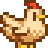 |
Chicken | 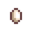 Egg -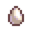 Large Egg - |
||
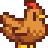 |
Chicken | 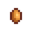 Brown Egg -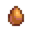 Large Brown Egg - |
||
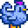 |
Chicken | Egg - Large Egg - |
||
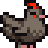 |
Void Chicken | N/A | 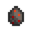 Void Egg - |
|
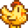 |
Golden Chicken | N/A | 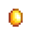 Golden Egg - |
When purchasing from Marnie's Ranch, either a white or brown chicken is chosen randomly. After seeing Shane's 8-heart event, each chicken purchased from Marnie's Ranch has a 25% chance of being blue. Aside from appearance, blue chickens are identical to white chickens.
A White, Brown, or Blue (if blue has been unlocked) Chicken can be received from incubating an egg of either type (White or Brown).
A Void Chicken must be hatched from a Void Egg in an Incubator. There are three ways to obtain a Void Egg. In a random event after sleeping, a Witch will fly over one of the Big or Deluxe Chicken Coops, leaving a Void Egg in the morning. Alternatively, a Void Egg can be purchased from Krobus for  5,000g in The Sewers. Shane may also gift a Void Egg if married to him.
5,000g in The Sewers. Shane may also gift a Void Egg if married to him.
To obtain Golden Eggs and Golden Chickens, Perfection must be reached. After that, a Golden Egg can be purchased from Marnie's Ranch for  100,000g and Qi's Walnut Room for
100,000g and Qi's Walnut Room for  100. There is also a possibility of a Witch leaving a Golden Egg in a Coop, or a fishing treasure chest containing a Golden Egg.
100. There is also a possibility of a Witch leaving a Golden Egg in a Coop, or a fishing treasure chest containing a Golden Egg.
Ducks
- Main article: Duck
Adult ducks will lay an egg or drop a Duck Feather every other day. Happier ducks have a higher chance to produce a Duck Feather instead of an egg.
| Image | Name | Cost | Requirements | Produces | 5 Heart Selling Price |
|---|---|---|---|---|---|
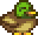 |
Duck | Big Coop | 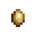 Duck Egg -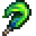 Duck Feather - |
Rabbits
- Main article: Rabbit
| Image | Name | Cost | Requirements | Produces | 5 Heart Selling Price |
|---|---|---|---|---|---|
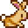 |
Rabbit | Deluxe Coop | 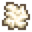 Wool -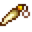 Rabbit's Foot - |
Dinosaurs
- Main article: Dinosaur
To obtain a Dinosaur, a Dinosaur Egg must be found, and then placed in an Incubator. In approximately 12.5 days, a Dinosaur will hatch.
The Dinosaur acts like any other coop animal, but it lays a Dinosaur Egg every 7 days and makes no sound.
| Image | Name | Cost | Requirements | Produces | 5 Heart Selling Price |
|---|---|---|---|---|---|
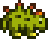 |
Dinosaur | N/A | Big Coop | 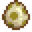 Dinosaur Egg - |
Barn Animals
These animals cannot be purchased until a Barn is built on the farm, and must occupy a spot in a barn. Out of their produces, Milks and Wools are either gathered with a tool. In the case of pigs, they leave Truffles on the ground outside while grazing. Ostriches leave their eggs on barn floors, like coop animals.
Barn animals (except Ostriches) may become pregnant at random if the pregnancy option is enabled on their status menu. This is opened by interacting with the animal after petting it. An icon to the right of the menu can be toggled to allow pregnancy for that animal. If an animal becomes pregnant, during the night a message box will pop up saying an animal gave birth. The game will then prompt the player to choose a name for the new animal. For pregnancy to happen the player needs to have upgraded to at least a Big Barn and have enough room for another animal.
Cows
- Main article: Cow
| Image | Name | Cost | Produces | 5 Heart Selling Price |
|---|---|---|---|---|
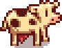 |
Cow | 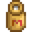 Milk -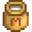 Large Milk - |
||
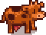 |
Cow |
Goats
- Main article: Goat
Goats typically produce milk every other day. Like with cows, milk from goats may be harvested with a Milk Pail.
| Image | Name | Cost | Requirements | Produces | 5 Heart Selling Price |
|---|---|---|---|---|---|
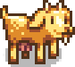 |
Goat | Big Barn | 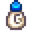 Goat Milk -Large Goat Milk - |
Sheep
- Main article: Sheep
Sheep can be shorn when their coat grows in. Shears can be purchased at Marnie's Ranch.
A sheep will normally grow in its coat every 3rd day if it has been fed and has at least 70 happiness.
If the player has 900 or more Friendship with the sheep and has pet it at least one time, it will reduce it to every other day.
If the player also has the Shepherd profession, it will reduce the time required to regrow by an extra day, making a sheep grow its coat every single day.
| Image | Name | Cost | Requirements | Produces | 5 Heart Selling Price |
|---|---|---|---|---|---|
| Sheep | Deluxe Barn | Wool - |
Pigs
- Main article: Pig
Pigs will find Truffles after being let outdoors. Truffles can be used in the Oil Maker to make Truffle Oil.
Collection will be affected by Foraging skill, allowing the player to gather iridium quality Truffles with a chance of double harvest.
During Winter, pigs will not produce Truffles since they don't leave the barn.
| Image | Name | Cost | Requirements | Produces | 5 Heart Selling Price |
|---|---|---|---|---|---|
| Pig | Deluxe Barn | Truffle - |
Ostriches
- Main article: Ostrich
A mature and fed Ostrich produces an Ostrich Egg every 7 days.
| Image | Name | Cost | Requirements | Produces | 5 Heart Selling Price |
|---|---|---|---|---|---|
| Ostrich | N/A | Barn | Ostrich Egg - |
Slime Hutch
- See: Slime Hutch
Other Animals
Many animals (or 'critters') can be seen throughout the game, but cannot be interacted with, such as rabbits, squirrels, frogs, crows, woodpeckers, sparrows, butterflies, opossums, etc. Squirrels may occasionally cause Hazelnuts or other tree seeds to fall to the ground, and rabbits can knock berries from bushes during Salmonberry or Blackberry season. On Ginger Island, crabs, caldera monkeys, parrots, a marsupial and tropical butterflies can be seen. Some "other" animals are described below.
Butterflies
Butterflies are abundant, and come in many colors, though they can only be seen outdoors in warm weather. To see butterflies, shake or chop trees, or place a Butterfly Hutch. On Ginger Island, unique tropical varieties of butterfly can be seen.
Crows
Every night, there is a chance that crows will eat crops[11] (including Fiber Seeds) on The Farm. Crows will not eat crops grown from wild seeds, seeds themselves, crops the growth stage immediately after seeds, or crops within range of one or more scarecrows. Note that crops grow before being targeted by crows, so a crop in stage 2 that grows to stage 3 overnight can be eaten.
For every 16 crops (rounded down), a crow may try to eat a crop. This is maxed at 4 crows. A crop is counted regardless of if it can be eaten by a crow.
Each crow has a 30% chance of attempting to eat. A crow attempting to eat a crop will try 10 times to find an eligible crop. A crow chooses a random tile on the farm that is either tilled, contains a tree, contains grass, or has flooring on it. (Note: This is done after overnight un-tilling[6]) If this tile contains a crop that has grown to the second stage beyond seeds, the crow will stop looking. If the crop is in range of a scarecrow, the crow will be scared off. Otherwise the crow will eat the crop. Note that crows will eat dead crops leftover from previous seasons.
Each crow will only eat one crop, but may continue to hop around and peck at the ground afterwards. This animation is purely cosmetic.
Before scarecrows are unlocked, the only way to ensure no crows appear is to plant at most 15 crops at a time. This implies that the initial 15 Parsnip Seeds provided by Lewis can all be safely planted; harvesting them gives the player enough experience to reach Farming level 1 and unlock scarecrows. However, planting just one additional crop (even wild seeds, or a crop at the seed stage) can trigger crows.
Note that there are no crows on the Ginger Island farm, so this section does not apply to crops that are planted there.
Fireflies
During the summer, fireflies can be seen everywhere at night, particularly in Cindersap Forest. They create a small glow of light around them.
Frogs
When cutting weeds, there is a chance of seeing a green frog appear and run away. A frog appears as part of Sebastian's 14-heart event. If the player equips a Frog Egg trinket, they will gain a frog companion, which can come in a wide variety of colors.
Owls
Owls can be seen only at night. In Spring and Summer, they can appear starting at 8pm; in Fall at 7pm, and in Winter at 6pm. There is a 1% chance for an owl to appear every 10 in-game minutes. [12]
Parrots
On Ginger Island, parrots can sometimes be seen flying overhead, or roosting in the trees in the island's jungle. Parrots on perches can be fed with Golden Walnuts to unlock various rewards. A parrot also appears as part of Emily's 4-heart event, and in her house afterwards. If the player equips a Parrot Egg trinket, they will gain a parrot companion.
Seagulls
Seagulls appear at the beach. They can be seen floating in the water, doing nothing, or cleaning themselves with their beak. When on the ground, they may also move slightly in the direction they're facing by hopping.
Should the player get too close, they will fly away.
Bugs
- If the pet is in position to block movement up the path to the backwoods while the player is riding a horse, the pet will not move to allow the player through.
- It is possible to easily glitch through one-tile-wide objects (like fences, sprinklers, or scarecrows) while riding the horse. Just ride vertically alongside the object, then turn 90° into the object.
- Placing the horse behind the Ice Cream Stand when nobody is there lets the player buy Ice Cream during Summer.
References
- ↑ See GameLocation::animalShop in the game code.
- ↑ See Pet::dayUpdate in the game code.
- ↑ See Content\Data\Pets.xnb and Pet::checkAction in the game code.
- ↑ See Farmer::getMovementSpeed in the game code.
- ↑ See Farmer::addedSpeed in the game code.
- ↑ 6.0 6.1 6.2 See Farm::dayUpdate in the game code.
- ↑ See FarmAnimal:Eat in the game code.
- ↑ See Grass:reduceBy in the game code.
- ↑ See SoundInTheNightEvent::SetUp and SoundInTheNightEvent::makeChangesToLocation in the game code.
- ↑ See FarmAnimal::getSellPrice in the game code.
- ↑ See Farm::addCrows in the game code.
- ↑ See GameLocation::tryToAddCritters in the game code.
History
- 1.02: If you have not received your pet yet, you will get another chance to get it.
- 1.3.27: Fixed bug causing animal happiness to decrease if the player stayed up after 6pm. Added ability to place hats on horses.
- 1.4: Added 2 new styles of cat and 2 new styles of dog. Made pet style changeable at Shrine of Illusions. Added ability to remove hats from horses. Removed exploit allowing wallpaper #108 to be used in an incubator in place of a Dinosaur Egg. Rain now fills the pet bowl. Pets now stay inside the farmhouse all day when it's raining. Sales of animals now count towards game's total earnings.
- 1.4.3: Fixed a bug where naming a pet the same name as an NPC would cause the pet to appear in place of the NPC on the calendar.
- 1.5: Duck purchase price reduced from 4000g to 1200g. Duck Feather sell price increased from 125g to 250g. Duck feather drop rate increased. Pets no longer block construction of new buildings. Sprinklers can now water troughs in a Slime Hutch. Added Ostriches and Golden Chickens. Added new cosmetic critters on Ginger Island.
- 1.5.4: Duck sell price reduced.
- 1.6: The player now chooses between 5 different types of cats and 5 different types of dogs, up from 3 each. The player can also purchase additional pets, including turtles. Cats, dogs, and turtles can randomly give the player a gift after reaching maximum friendship and being petted. There is now a way to have pet friendship decrease, by not giving them a Pet Bowl. Pets can be removed with Butterfly Powder. Pets can no longer be changed at The Shrine of Illusions. Added Horse: The Book and the ability to feed a carrot to the horse once per day. Added Animals tab in the menu. Added Golden Animal Crackers and Blue Grass. Farm animals now gain a little happiness if you close the animal door behind them at night. Added Frog Egg and Parrot Egg. Added a new rare ambient critter (opossum). Bug where horse can be parked behind the Ice Cream Stand to allow Ice Cream purchase now limited to Summer.
- 1.6.3: Players can start adopting pets in Marnie's shop if they don't have one in year two.
- 1.6.4: Fixed pet adoption catch-all case only working if the player had the Animal Catalogue and only applying specifically in Year 2. Fixed disappearing pets bug.
- 1.6.9: Fixed cat gifts being effected by Bait attached to holding Fishing Pole.
| Animals and Produce | |
|---|---|
| Coop | Chicken (Egg • Large Egg • Brown Egg • Large Brown Egg) • Dinosaur (Dinosaur Egg) • Duck (Duck Egg • Duck Feather) • Golden Chicken (Golden Egg) • Rabbit (Wool • Rabbit's Foot) • Void Chicken (Void Egg) |
| Barn | Cow (Milk • Large Milk) • Goat (Goat Milk • Large Goat Milk) • Sheep (Wool) • Ostrich (Ostrich Egg) • Pig (Truffle) |
| Fish Pond | Fish (Roe) |
| Slime Hutch | Slimes (Slime • Slime Ball • Slime Egg) |
| Other | Cat • Dog • Horse • Turtle |